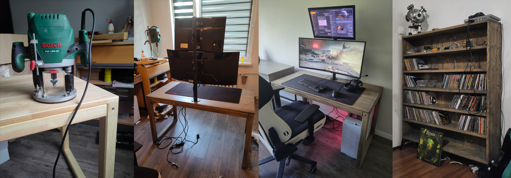

The beginning of my every woodworking project is full of enthusiasm but the ending is always a promise to never do it again.
That aside, the woodworking is always fun. Getting tangled with such anisotropic materials reminds you of what a nice thing it is to have metals and polymers as a construction materials for other projects. I needed these furniture but the thought of buying something that will not be as rigid or custom as I want it to be was terrifying. After realising the costs were the same but the DIY will be much more sturdy and appealing I decided to manufacture all furniture instead of buying them. This approach is a process I hope to finish when I'll finally move to a home of my own.
The two projects I made are the office (gaming) desk and a CD rack. I'm not really much of a carpenter, so I decided to take the easy way and join everything using screws and glue. This approach does not require much gear and can be executed in matters of hours. The biggest enemy turned out to be the moisture as it bent every piece of wood in its own direction (which happened multiple times) which I tried to combat by working quickly before the wood will bend again. This yielded in a straight CD rack with tens of cracks :D as the screws did not allow the wood to work, and it just ripped itself apart (visible only after close inspection, maybe even gives it character). As a finish I used a gray wood oil in 6 light coats.
Lessons learned from this project is to never use a solid unglued wood (the desk did not bend as the wood was glued) and work in at least somewhat moisture regulated conditions (up to a point of oiling the wood). The gluing will take the anisotropic properties at least partially out of equation.